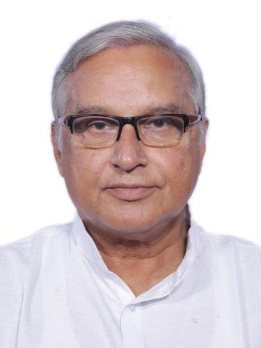

சந்திர சேகர் சாஹு

முக்கிய பதவிக்காலம்:
ஊரக வளர்ச்சி அமைச்சகம், மாநில அமைச்சர்
௨௦௦௬ - ௨௦௦௯
தொழிலாளர் அமைச்சகம், மாநில அமைச்சர்
௨௦௦௬ - ௨௦௦௬
1வது மன்மோகன் சிங் அமைச்சகம்
தொழிலாளர் அமைச்சகம்
மாநில அமைச்சர்
ஊரக வளர்ச்சி அமைச்சகம்
மாநில அமைச்சர்
1வது மன்மோகன் சிங் அமைச்சகம்

1_Upload_1477.pdf
1_Upload_1482.pdf

மன்மோகன் சிங்
o-Manmohan_Singh.htmlபிரதமர்
௨௨ மே ௨௦௦௪ - ௨௨ மே ௨௦௦௯

கே. சந்திரசேகர ராவ்
o-K._Chandrashekar_Rao.htmlகேபினட் அமைச்சர்
௨௭ நவம்பர் ௨௦௦௪ - ௨௪ ஆகஸ்ட் ௨௦௦௬
சந்திர சேகர் சாஹு
o-Chandra_Sekhar_Sahu.htmlமாநில அமைச்சர்
௨௯ ஜனவரி ௨௦௦௬ - ௨௪ அக்டோபர் ௨௦௦௬
தொடர்புடைய ஆணைகள்
1_Upload_1477.pdf[25]௨௯ ஜன. ௨௦௦௬போர்ட்ஃபோலியோ மாற்றம்1_Upload_2105.pdf[77]௩ பிப். ௨௦௦௬மந்திரி சபை1_Upload_2106.pdf[77]௭ பிப். ௨௦௦௬மந்திரி சபை1_Upload_2108.pdf[75]௧௭ ஜூலை ௨௦௦௬மந்திரி சபை1_Upload_1482.pdf[6]௨௪ அக். ௨௦௦௬போர்ட்ஃபோலியோ மாற்றம்